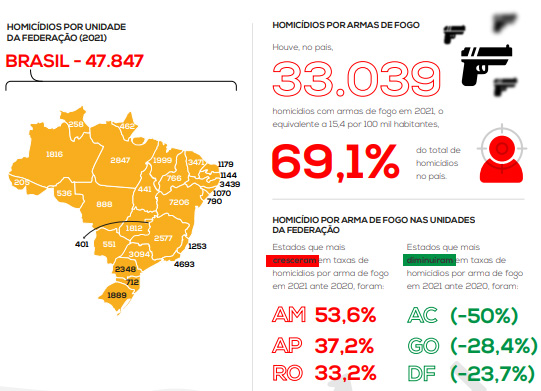

Estatísticas Gerais - Dashboard
O Brasil é o país que mais mata pessoas no planeta. Seus números superaram os números da guerra da Síria, por exemplo. Somente em 2021 houveram 47.847 homícidios.
A maior parte das mortes no país ocorreram em incidentes com arma de fogo. Houveram um total de 33.039 mortes com arma de fogo, sendo assim 69,1% do total de homícidios.
Aumentaram de índice
- Amazonas +53,6%
- Amapá +37,2%
- Rondônia +33,2%
Diminuíram de índice
- Acre -50%
- Goiás -28,4%
- DF -23,7%
Por que o Brasil é um País tão Violento?
A violência no Brasil é um fenômeno complexo que tem raízes históricas, sociais, econômicas e políticas. Aqui estão alguns pontos-chave que contribuíram para a violência no país ao longo do tempo:
A história do Brasil é marcada pela colonização portuguesa e pelo uso extensivo de escravos africanos. A escravidão deixou um legado de desigualdade, injustiça social e tensões raciais que ainda afetam o país hoje.
O Brasil tem uma das maiores desigualdades de renda do mundo. A disparidade entre ricos e pobres é evidente em muitos aspectos da vida, incluindo acesso à educação, saúde e oportunidades econômicas. A desigualdade socioeconômica cria um terreno fértil para a violência, pois pode levar à marginalização, exclusão e conflitos.
Nas últimas décadas, o país passou por um processo intenso de urbanização, com muitas pessoas migrando do campo para as cidades em busca de trabalho e melhores condições de vida. No entanto, esse crescimento urbano nem sempre foi acompanhado por políticas eficazes de planejamento urbano, resultando em favelas e bairros periféricos desprovidos de infraestrutura básica, onde a violência muitas vezes prolifera.
O Brasil é uma rota importante para o tráfico de drogas na América do Sul, o que alimenta a atividade criminosa e a violência. O crime organizado, incluindo facções criminosas dentro e fora dos presídios, exerce um grande controle sobre certas áreas urbanas, contribuindo para altos índices de homicídios e outras formas de violência.
A impunidade é um problema sério no país. Muitos crimes não são investigados ou punidos devidamente, minando a confiança da população no sistema de justiça e incentivando a perpetuação da violência.